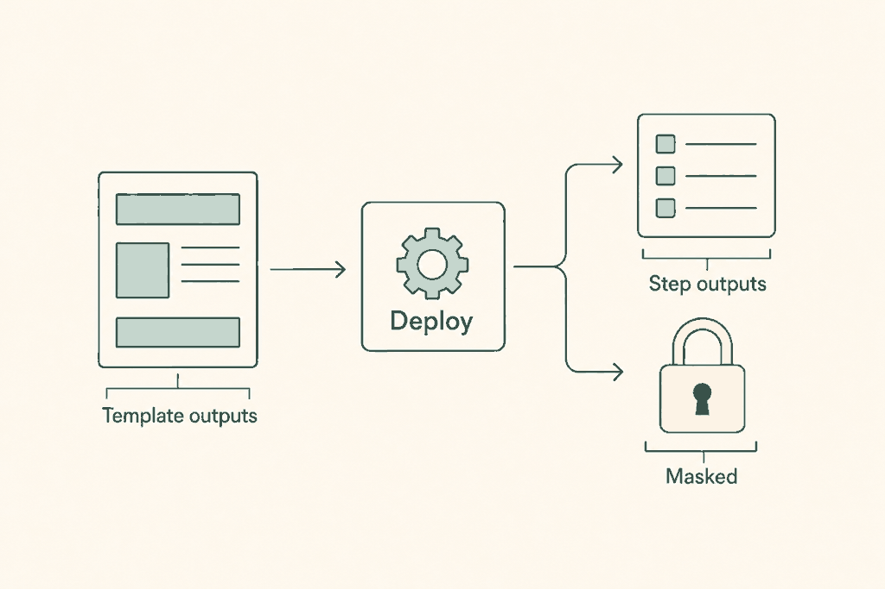
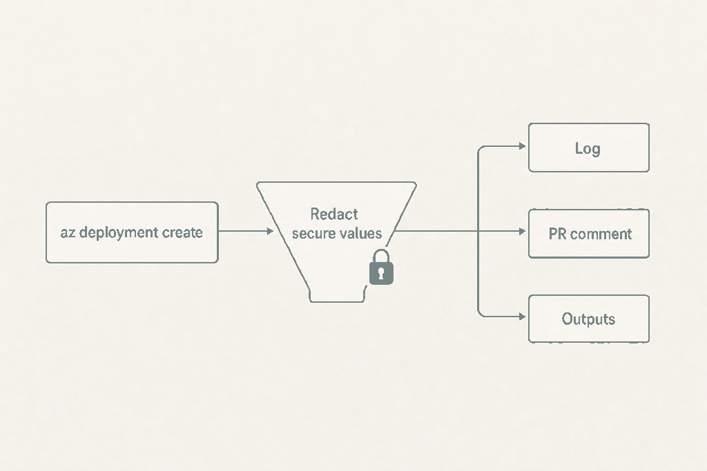

Plan: Expose deployment outputs, with masked outputs

Purpose
Let a later job use what the template produced: a resource ID, an endpoint, a principal ID. After a successful deployment, classic or stack, at any scope, the deploy action and the Azure DevOps deploy stage publish the template outputs. A new masked_outputs input hides sensitive values, and outputs typed securestring or secureObject are always hidden.
Decision record: docs/adr/0001-deploy-outputs.md. Issue: #54.
Problem
The deploy action has no outputs: block and its step has no id. The Azure DevOps Deploy task has no name:. A later job must query Azure again, or the template author works around it.
There is also a hole that masking has to close first. az deployment <scope> create prints the whole result, including every output value, and scripts/az-deploy.sh tees it into the step log (line 585). For a standard deployment log_output (lines 34-88) copies the JSON into the step Markdown file (lines 54-59), scripts/pr-comment.sh posts every step_*.md verbatim, and the logs artifact holds the same files. A stack result is teed to the log at line 528. So output values already reach the console and the log, and for standard deployments the pull request comment and the artifact. Masking that only calls ::add-mask:: would leave the comment and the artifact unprotected, because a mask does not edit files.
Solution
A new sourced script, scripts/deploy-outputs.sh, runs after a successful create. It captures the create command's stdout instead of teeing it, reads properties.outputs, decides which outputs are masked (named in masked_outputs, or secure type), registers the masks, prints and stores a redacted copy of the result, scrubs the log, and publishes the outputs.
| Where | Non-masked outputs | Masked outputs |
|---|---|---|
| GitHub | One action output outputs: compact JSON object of all non-masked outputs. Use fromJSON(). | Environment variable BICEP_OUTPUT_<NAME> for later steps in the same job, after ::add-mask::. Not in outputs, because the runner drops a job output that contains a mask. |
| Azure DevOps | Output variable per output (isOutput=true) on step deploy, plus outputs with the JSON. | Output variable with isOutput=true;issecret=true. Not in outputs. |
Objects and arrays stay JSON values. With no outputs the script writes nothing. masked_outputs is not a plan setting: it changes what is hidden, not what is deployed, so the plan's settings check is untouched.

Relevant Files
Existing Files
- existing
scripts/az-deploy.sh— create paths at line 528 (stack) and line 585 (classic),log_outputat lines 34-88,check_plan_settingsat lines 252-271, tenant and extension fallback at lines 326-343. - existing
.github/actions/deploy/action.yml— "Create deployment" step (lines 175-197) needs anidand the new env; the action needs anoutputs:block and themasked_outputsinput. - existing
.github/actions/plan/action.yml— only for the pattern: itsoutputs:block (lines 117-129) andid: what_if. - existing
.azuredevops/templates/deploy-stage.yml— Deploy task (lines 148-157) needsname: deploy; the script download list (lines 94-102) needsdeploy-outputs. - existing
.azuredevops/ms.azure.deploy.yml— the single-file pipeline: same two edits (script list near line 316, Deploy task lines 367-376). - existing
scripts/pr-comment.sh— posts everystep_*.mdverbatim; read only, to confirm what the redaction must cover. - existing
scripts/debug-info.shand the "Show debug info" step in the deploy action — dump the environment; must never see output values (onlyMASKED_OUTPUTSnames). - existing
docs/configuration.md— settings table (lines 26-67), "Outputs" section (line 256) which says "The deploy action has no outputs", Azure DevOps table (line 245). - existing
docs/how-it-works.md— "The deploy job" (line 80), "Deploy exactly what was planned" (line 96), "Logs and artifacts" (line 311). - existing
docs/examples/README.md,docs/examples/github/recommended.yml,docs/examples/azure-devops/multi-environment.yml— index and style reference for the new examples.
New Files
- new
scripts/deploy-outputs.sh— sourced byaz-deploy.sh; collect, mask, redact, scrub, publish. - new
tests/deploy-outputs/run.sh— offline test runner that feeds fixture results to the script and checks the files and output lines. - new
tests/deploy-outputs/fixtures/*.json— create results: no outputs, mixed types, secure output, multi-line and%values, stack shape. - new
tests/deploy-outputs/outputs.bicep— output-only template for the live test deployment (no resources, so it deploys at every scope; onlytargetScopechanges). - new
docs/examples/github/use-outputs.yml— deploy job, then a second job that consumesoutputsand a masked value. - new
docs/examples/azure-devops/use-outputs.yml— deploy stage, then a later stage that reads an output and a secret output.
Implementation Phases
IMPORTANT: Execute every phase and task step by step, in order, top to bottom.
Status markers: [] idle · [wip] in progress · [x] complete · [f] failed. All start as []; the Build Plan workflow updates them as it works.
[] Phase 1: The core script and the create paths
Write scripts/deploy-outputs.sh and call it from both create paths in scripts/az-deploy.sh. Nothing platform-specific yet except the two publish functions, which already branch on TF_BUILD as the rest of the script does.
1. Design of deploy-outputs.sh
It is sourced, not executed, like bicep-version.sh and azure-subscription.sh (see az-deploy.sh lines 204 and 221). It reads MASKED_OUTPUTS, LOG_PATH, LOG_NAME, IN_SCOPE and TF_BUILD from the environment and expects ${log} from the caller. Public entry point: deploy_outputs_handle <result-json>.
# scripts/deploy-outputs.sh (sketch)
deploy_outputs_handle() {
local result="${1}" log_md="${log/.log/.md}"
# 1. Not JSON (or no result): print as is and stop. Nothing to protect.
if ! jq -e 'type == "object"' <<< "${result}" >/dev/null 2>&1; then
printf '%s\n' "${result}" | tee -a "${log}"; return 0
fi
# 2. The table: one row per output.
local masked_csv
masked_csv=$(printf '%s' "${MASKED_OUTPUTS-}" | tr '[:upper:]' '[:lower:]' | tr -d '[:space:]')
OUTPUT_TABLE=$(jq -c --arg m "${masked_csv}" '
($m | split(",") | map(select(. != ""))) as $mask
| (.properties.outputs // {}) | to_entries
| map({
name: .key,
type: ((.value.type // "") | ascii_downcase),
value: .value.value,
masked: (((.key | ascii_downcase) as $k | $mask | index($k)) != null
or ((.value.type // "") | ascii_downcase | startswith("secure")))
})' <<< "${result}")
# 3. No outputs: print exactly what az printed, write nothing else.
if [ "${OUTPUT_TABLE}" = '[]' ]; then
printf '%s\n' "${result}" | tee -a "${log}"; return 0
fi
# 4. Masks first, before the value is written anywhere.
register_masks
# 5. Redacted copy to console and log.
jq '. as $r | reduce (env_table[] | select(.masked and .value != null)) as $o
($r; .properties.outputs[$o.name].value = "***")' ... | tee -a "${log}"
# 6. Scrub any other literal copy (debug output) from the log.
scrub_log
# 7. Publish, then add the names-only table to the step Markdown.
publish_outputs
}Details that are easy to get wrong:
| Concern | Rule |
|---|---|
| Masked value text | jq -r 'if type == "string" then . else tojson end'. For an object or array also mask every string leaf of 4 or more characters (.. | strings | select(length >= 4)) and the compact JSON. |
| GitHub masks | One ::add-mask:: line per line of the value. A multi-line value masked with a single command leaves its later lines visible. |
| Azure DevOps masks | Done by issecret=true on setvariable. Print the redacted JSON only after that call so the console never shows the value. |
| Secure types | ARM normally returns no value for SecureString / SecureObject. If value is null or absent, publish nothing for that output and log one line: Output 'x' is secure and Azure returned no value. If a value is present, mask it like any other. |
| Scrub | Per masked line: V="${line}" perl -pi -e 'BEGIN { $v = $ENV{V} } s/\Q$v\E/***/g' "${log}". Pass the value through the environment, never on the command line. |
| Step Markdown | log_output rewrites the .md file with >, so append the outputs table after it: name, type, masked yes or no, never a value. |
register_masks returns breaks the promise that a masked output never appears in the log, the comment or the artifact.2. Wire the standard deployment path
[]Inscripts/az-deploy.sh, replace the single line at 585 (eval "${cmd}" 1> >(tee -a "${log}") 2> >(tee -a "${log}" >&2)) with a branch. ForSCRIPT_ACTION=create: sourcedeploy-outputs.sh, thenresult=$(eval "${cmd}" 2> >(tee -a "${log}" >&2))anddeploy_outputs_handle "${result}". Forvalidateandwhat-ifkeep the existing line unchanged.[]Keeplog_output "${log}" '' ''(line 586) after the handler, so it reads the already redacted log. The handler must have appended the redacted JSON to the log before this point; the Markdown details block then contains***, not the value.[]A failingazinside$(...)still tripsset -eand theERRtrap at line 9, so the error path (error(), lines 22-33) is unchanged. Confirm by running with a fakeazthat exits 1.[]Fallback: if the result has nopropertiesobject, read it withaz deployment "${IN_SCOPE}" show --name "${LOG_NAME}_${RUN_ID}"plus the same scope arguments the create used (--resource-group,--management-group-id; sub and tenant have none). Put the scope arguments in an array once, instead of re-deriving them from thecmdstring.
3. Wire the stack path
[]At line 528 replace the tee withresult=$("${stack_cmd[@]}" 2> >(tee -a "${log}" >&2))followed bydeploy_outputs_handle "${result}", before the "deployed" line at 529. The stack result keeps outputs at.properties.outputs, the same path, so the same jq works.[]Fallback for an empty result:az stack "${stack_scope}" show --name "${stack_name}" "${stack_args[@]}". Note thatstack_argsfor the sub scope holds--location, whichshowdoes not take; build a separateshow_argsasstack_whatif_gatedoes forscope_args(lines 390-395).[]Tenant scope and templates with Bicep extensions fall back to a standard deployment (lines 326-343) and so take the standard path above. Nothing extra to do; add a test case for it.
4. Publish functions
publish_outputs() {
local json
json=$(jq -c 'map(select(.masked | not)) | map({(.name): .value}) | add // {}' <<< "${OUTPUT_TABLE}")
if test -n "${TF_BUILD-}"; then
# Azure DevOps: a variable per output, then the JSON.
while IFS= read -r row; do
name=$(jq -r .name <<< "${row}"); masked=$(jq -r .masked <<< "${row}")
[ "$(jq -r '.value == null' <<< "${row}")" = true ] && continue
val=$(jq -r 'if (.value | type) == "string" then .value else (.value | tojson) end' <<< "${row}")
val=${val//'%'/'%AZP25'}; val=${val//$'\r'/'%0D'}; val=${val//$'\n'/'%0A'}
if [ "${name}" = outputs ]; then warn "..."; continue; fi
if [ "${masked}" = true ]; then
echo "##vso[task.setvariable variable=${name};isOutput=true;issecret=true]${val}"
else
echo "##vso[task.setvariable variable=${name};isOutput=true]${val}"
fi
done < <(jq -c '.[]' <<< "${OUTPUT_TABLE}")
echo "##vso[task.setvariable variable=outputs;isOutput=true]${json//'%'/'%AZP25'}"
else
# GitHub: one JSON output, masked values into the job environment.
echo "outputs=${json}" >> "${GITHUB_OUTPUT:-/dev/null}"
# for each masked row: heredoc form with a random delimiter into GITHUB_ENV
# BICEP_OUTPUT_${NAME^^}<<ghd_${RANDOM}${RANDOM}
fi
}[]Implementregister_masks,scrub_logandpublish_outputsas sketched. The compact JSON fromjq -cis a single line, so the plainname=valueform is valid forGITHUB_OUTPUT; use the heredoc form only for theGITHUB_ENVmasked values, which can be multi-line.[]Never useecho "${val}"for values that can start with-nor contain backslashes; useprintf '%s\n'.[]Output names are Bicep identifiers (letters, digits, underscore), valid for both platforms. Validate with[[ "${name}" =~ ^[A-Za-z_][A-Za-z0-9_]*$ ]]anyway and skip, with a warning, a name that does not match, rather than writing a malformed command.[]Add the append of the names-only Markdown table:## Outputs, columns name, type, masked. Values are never in it.
5. Testing Strategy
The script is pure shell and jq, so the redaction, masking and escaping rules are tested offline with fixture results before anything touches Azure. The runner sets LOG_PATH to a temp folder and points GITHUB_OUTPUT and GITHUB_ENV at temp files, then asserts on the files and on captured stdout. Cases: no outputs, string, int, bool, object, array, secure output with no value, secure output with a value, an output named in masked_outputs in a different case, a multi-line value, a value containing %, -n and a backslash, an output called outputs, a stack-shaped result, a non-JSON result.
[]shellcheck scripts/deploy-outputs.sh scripts/az-deploy.sh— no new warnings against the current baseline (run it on the unmodified file first and compare).[]bash -n scripts/deploy-outputs.sh && bash -n scripts/az-deploy.sh— both parse.[]bash tests/deploy-outputs/run.sh— every fixture passes: no masked value in the log, the step Markdown orGITHUB_OUTPUT;BICEP_OUTPUT_*present inGITHUB_ENV;::add-mask::lines precede the first write; the no-outputs fixture produces output byte-identical to the old code path.[]grep -rn "SECRET_SENTINEL" "${LOG_PATH}"in the runner, with a sentinel value planted in a masked output — must find nothing (the grep step proves the scrub, including with a simulated--debugline containing the value).[]TF_BUILD=1 bash tests/deploy-outputs/run.sh— the Azure DevOps branch:##vso[task.setvariable ...issecret=true]for masked, none for secure outputs without a value,%AZP25and%0Aescapes present, redacted JSON printed after the secret variable line.
[] Phase 2: GitHub deploy action
Declare the input and the output, give the step an id, and pass the new setting in. Composite actions can only return declared outputs, which is why the dynamic names stay inside the JSON.
1. .github/actions/deploy/action.yml
inputs:
masked_outputs:
description: "Comma separated names of template outputs to mask. Their values never reach the log or the comment, are not in the 'outputs' output, and are available to later steps in the same job as BICEP_OUTPUT_<NAME>. Outputs typed securestring or secureObject are always masked."
required: false
default: ""
outputs:
outputs:
description: "The template outputs as a JSON object, {name: value}. Objects and arrays stay JSON. Masked and secure outputs are not included. Read one with fromJSON(steps.<id>.outputs.outputs).<name>."
value: ${{ steps.deploy.outputs.outputs }}
# ...
- name: Create deployment
id: deploy
env:
MASKED_OUTPUTS: ${{ inputs.masked_outputs }}
# existing env unchanged[]Add themasked_outputsinput afterlog_severity(alphabetical order is kept in the file: place it betweenmanagement_groupandresource_group).[]Add anoutputs:block betweeninputs:andruns:, as the plan action does (plan/action.yml line 117).[]Addid: deployandMASKED_OUTPUTSto the "Create deployment" step (lines 175-197). No other step changes. The "Show debug info" step dumpsprocess.envbetweenstop-commandsmarkers; it showsMASKED_OUTPUTSnames only, which is acceptable, and theBICEP_OUTPUT_*values are in the job environment but masked in the log.[]Check the "Show debug info" step does not printBICEP_OUTPUT_*values in clear.::stop-commands::stops workflow commands, but masking is applied to the log text by the runner regardless. Verify in the live test (Phase 5), and if a value shows, filter keys starting withBICEP_OUTPUT_out of the loop at action.yml line 289.
2. Behaviour on GitHub
| Case | Result |
|---|---|
| Template has no outputs | outputs is empty. No env variables. Log unchanged. |
Output vnetId, string | fromJSON(steps.d.outputs.outputs).vnetId |
Output subnets, array | JSON array inside the JSON: fromJSON(steps.d.outputs.outputs).subnets[0] |
masked_outputs: connString | Not in outputs. ${{ env.BICEP_OUTPUT_CONNSTRING }} in later steps of the same job. Cannot be passed to another job, by design. |
Output typed @secure() | Masked always. Usually no value from Azure, so nothing is published and one log line says so. |
[]Do not pass the wholeoutputsJSON as a job output of a reusable workflow without telling users the 1 MB limit for step and job outputs. Say so in the docs (Phase 4).
3. Testing Strategy
actionlint is not installed here, so use it through its release binary or docker run rhysd/actionlint when available; otherwise the YAML is parsed and the output wiring is checked by a short script, and the real check is the live deployment in Phase 5.
[]actionlint .github/actions/deploy/action.yml docs/examples/github/*.yml(ordocker run --rm -v "$PWD:/r" -w /r rhysd/actionlint:latest) — action and examples are valid. Fallback:python3 -c "import yaml,sys; yaml.safe_load(open(sys.argv[1]))" .github/actions/deploy/action.yml.[]yq '.outputs.outputs.value, .runs.steps[] | select(.id == "deploy") | .id' .github/actions/deploy/action.yml— the output refers to a step id that exists.[]git diff --stat origin/main -- .github/actions/deploy/action.yml— only the input, the outputs block, theidand one env line changed.
[] Phase 3: Azure DevOps stage template and single-file pipeline
Name the Deploy step, download the new script, and document the reference syntax. The variable MASKED_OUTPUTS reaches the script as an environment variable like every other pipeline variable, so no input plumbing is needed. Both deploy-stage.yml and ms.azure.deploy.yml need the same edits; they are separate copies of the deploy stage.
1. Edits
[].azuredevops/templates/deploy-stage.yml: addname: deployto the "Deploy"AzureCLI@2task (lines 148-157), next todisplayName. Add"deploy-outputs"to theSCRIPTSarray (lines 94-102); the download loop saves it next toaz-deploy.sh, which is wheredirname "${BASH_SOURCE[0]}"looks for it.[].azuredevops/ms.azure.deploy.yml: the same two edits in the Deploy stage (script list near line 316, Deploy task lines 367-376). Do not touch the Plan stage's list, which hasaz-deploytoo (line 91) but never publishes outputs: the plan runsvalidateandwhat-if, and the new code path is only forcreate. Still add the file to the Plan list so a future change does not fail on a missing source (sourcefails if the file is absent, and that is only reached on create).[].azuredevops/templates/deploy-stage.ymlheader comment (lines 1-22): add a line on the outputs and onMASKED_OUTPUTS.[]Check that no step in the deploy job prints variables: the "Debug information" task setsIN_*only;pipeline-summary.shreads log file names. Nothing prints an output variable.
2. Reading the outputs
Within the deployment job, a later step reads $(deploy.vnetId). From another job or stage the reference includes the deployment job name, here create, as in the existing plan reads (stageDependencies.Plan.plan.outputs['what_if.bicep_version']), but with the job-name prefix that deployment jobs add:
# another stage
variables:
VNET_ID: $[ stageDependencies.Deploy.create.outputs['create.deploy.vnetId'] ]
ALL: $[ stageDependencies.Deploy.create.outputs['create.deploy.outputs'] ]
# in a job of the same stage as the deployment job
VNET_ID: $[ dependencies.create.outputs['create.deploy.vnetId'] ]<job>.<step>.<name> form for deployment jobs is the documented one, but the template's stage name is the stageName parameter (default Deploy) and the job name is fixed at create. The live test in Phase 5 proves the exact string before the docs state it.[]In the docs, show the form for the template (stageNameparameter) and for the single-file pipeline (stageDeploy), and say that a masked output is read the same way and is shown as***in logs.[]Document that a masked output is not in theoutputsJSON and that whether Azure DevOps hands a secret output variable to another job has to be tested on the user's side. If the live test shows it does not, the docs say to read the value in the same job, or from Key Vault.
3. Testing Strategy
No Azure DevOps agent is available offline. The YAML is validated structurally, the script's Azure DevOps branch is covered by the Phase 1 runner with TF_BUILD=1, and the syntax for cross-job references is proven in the Phase 5 live run.
[]python3 -c "import yaml,sys; [yaml.safe_load(open(f)) for f in sys.argv[1:]]" .azuredevops/templates/*.yml .azuredevops/ms.azure.deploy.yml docs/examples/azure-devops/*.yml— all parse.[]grep -n "deploy-outputs" .azuredevops/templates/deploy-stage.yml .azuredevops/ms.azure.deploy.yml— present in both download lists.[]grep -n "name: deploy$" .azuredevops/templates/deploy-stage.yml .azuredevops/ms.azure.deploy.yml— the step is named in both.[]az pipelinesis not needed: if an Azure DevOps project is available,az pipelines run --branch feat/54-deploy-outputswith the test template (Phase 5) validates the template expansion; otherwise note the gap in the pull request.
[] Phase 4: Documentation and examples
The documentation changes are part of the feature. The "Outputs" section currently states that the deploy action has no outputs; that sentence has to go.
1. Reference and explanation
[]docs/configuration.md, settings table (lines 26-67): add a row "Masked outputs", GitHubmasked_outputs, Azure DevOpsMASKED_OUTPUTS, job D, default empty. Add a section "Deployment outputs" near "Pull request and merge" with the masking rule, the secure-type rule and the GitHub and Azure DevOps tables from Phase 2.[]docs/configuration.md, "Outputs" section (line 256): replace "The deploy action has no outputs." with a table of deploy outputs (outputson GitHub; per-output variables,outputson Azure DevOps with thedeploystep) and the reference forms.[]docs/how-it-works.md, "The deploy job" (line 80): one paragraph on what is published and when. "Deploy exactly what was planned" (line 96): one sentence that outputs are read after the deployment and are not part of the plan check. "Logs and artifacts" (line 311): masked values are replaced by***in the deploy log and comment; add the DEBUG caveat.[]State the limits plainly: composite actions cannot return per-output names; masked values on GitHub stay in the job; job and step outputs are limited to 1 MB; Azure DevOps limits variable size (give the verified number).[]Add a short note on the changed behaviour: the create result prints when the command ends, not as it runs, and secure values in it show as***.
2. Examples
# docs/examples/github/use-outputs.yml (deploy and consume)
deploy:
outputs:
outputs: ${{ steps.deploy.outputs.outputs }}
steps:
- uses: actions/checkout@v7
- id: deploy
uses: innofactororg/bicep-action/.github/actions/deploy@v1
with:
masked_outputs: connectionString
# ...the usual inputs
- run: ./configure.sh "${CONN}" # same job: the masked value
env:
CONN: ${{ env.BICEP_OUTPUT_CONNECTIONSTRING }}
smoke-test:
needs: deploy
runs-on: ubuntu-24.04
steps:
- run: curl --fail "https://${HOST}/health"
env:
HOST: ${{ fromJSON(needs.deploy.outputs.outputs).hostName }}[]Createdocs/examples/github/use-outputs.ymlfromrecommended.yml's structure, trimmed to the deploy job and one consumer job. Values reach scripts throughenv:, not interpolated intorun:, as the existing examples do.[]Createdocs/examples/azure-devops/use-outputs.ymlwith the stage template,MASKED_OUTPUTSinvariables, and a later stage that setsVNET_IDfromstageDependenciesand passes it to a script throughenv:.[]Add both to the example index indocs/examples/README.md.[]Use only generic names in every example (rg-app,hostName,connectionString). No customer names, no real IDs: use the all-zero GUID the other examples use.
3. Testing Strategy
Documentation is checked for correctness against the code, not for style alone: every input, variable and output name in the docs must exist in the code, and every example must parse.
[]grep -rn "no outputs" docs/ README.md .azuredevops/README.md— no statement left that contradicts the feature.[]for n in masked_outputs MASKED_OUTPUTS BICEP_OUTPUT_; do grep -rln "$n" scripts .github .azuredevops docs; done— each name appears in code and in docs.[]actionlint docs/examples/github/use-outputs.yml(or the YAML parse fallback) and the same Python parse fordocs/examples/azure-devops/use-outputs.yml— examples are valid.[]grep -rniE -f ~/.customer-denylist docs specs tests— nothing customer-specific (a public repository; the organisation name in the repository path is fine).
[] Phase 5: Live test deployment
Prove what offline tests cannot: what Azure returns for secure outputs, that the runner masks, that the comment and artifact are clean, and the exact Azure DevOps reference strings. The test template has outputs and no resources, so it creates nothing and deploys at every scope.
1. The test template and scenarios
// tests/deploy-outputs/outputs.bicep
targetScope = 'resourceGroup' // sed to subscription / managementGroup / tenant per scope
@secure()
param secretIn string = 'SENTINEL-secret-value-1234'
output text string = 'plain-value'
output count int = 42
output flag bool = true
output obj object = { id: '/subscriptions/0/x', tags: ['a', 'b'] }
output list array = ['one', 'two']
output multi string = 'line one\nline two'
output odd string = '50% -n \\backslash'
@secure()
output hidden string = secretIn
output conn string = 'SENTINEL-conn-5678' // masked through masked_outputs| Scenario | Settings | Expect |
|---|---|---|
| Standard, group | masked_outputs: conn | All outputs in the JSON except conn and hidden; BICEP_OUTPUT_CONN usable in a later step; no SENTINEL in the log, comment or artifact. |
| Standard, sub, mg, tenant | same | Same result at every scope. |
| Stack, group, sub, mg | deployment_mode: stack | Same outputs from az stack ... create. |
| Stack requested, tenant | deployment_mode: stack | Falls back to standard with the existing warning; outputs published. |
| No outputs | empty template | Run identical to main: same log, same comment. |
| Severity DEBUG | log_severity: DEBUG | Records whether the live log shows a masked value; the artifact is clean after the scrub. |
[]Createtests/deploy-outputs/outputs.bicepand a smalltests/deploy-outputs/README.mdline in the runner header describing how to switchtargetScope(asedon line 1).[]Run the GitHub scenarios from a throwaway workflow in a fork or scratch repository with a service principal that has Contributor on a scratch resource group (and the matching rights for sub, mg and tenant scope where available). Record the results in the pull request description, not in the repository.[]Run the Azure DevOps scenario with the stage template and a consumer stage; capture the exact working reference string and whether the secret variable arrives in the later stage. Update Phase 3's docs with the verified form.
2. Testing Strategy
[]az deployment group create -g <scratch-rg> --template-file tests/deploy-outputs/outputs.bicep -o json | jq '.properties.outputs.hidden'— shows what Azure returns for a secure output (expected: type only, no value). Record it; if a value comes back, the masking path is exercised in the live runs.[]gh run view <id> --log | grep -c "SENTINEL"— 0 for every masked or secure value, on every scenario above.[]gh run download <id> -n deploy_logs && grep -r "SENTINEL" deploy_logs/ | wc -l— 0 in the logs artifact, including the.mdfiles; and the PR comment body fetched withgh pr view <n> --json commentscontains no SENTINEL.[]A second job readsfromJSON(needs.deploy.outputs.outputs).obj.tags[1]and printsb— object and array outputs are usable as JSON.[]Run the no-outputs scenario on this branch and onmain;diffthe twodeploy_logsartifacts after removing timestamps and run IDs — identical.
Validation Commands
Execute these commands to validate the entire plan is complete:
[]shellcheck scripts/*.sh tests/deploy-outputs/run.sh— no new findings.[]bash tests/deploy-outputs/run.sh && TF_BUILD=1 bash tests/deploy-outputs/run.sh— offline tests pass on both platform branches.[]bicep build tests/deploy-outputs/outputs.bicep --stdout | jq '.outputs | keys'— the test template compiles and lists every output.[]actionlint .github/actions/*/action.yml docs/examples/github/*.yml— valid, or the Python YAML parse fallback.[]git diff --stat origin/main— only the files named in this plan changed;scripts/az-deploy.shhunks are limited to the two create sites and onesourceline.[]The live scenarios in Phase 5 all met their expectations, with the results noted in the pull request.
Questionables
Does Azure DevOps pass a secret output variable to a later job or stage?
Assumed yes with isOutput=true;issecret=true, but Azure DevOps has a history of not exposing secret values across jobs. Phase 5 tests it. If it does not, masked outputs on Azure DevOps are usable only inside the deployment job, the docs say so, and the example reads the value from Key Vault in the later stage.
Does ARM return the value of a securestring or secureObject output at all?
Expected no (type only). The design publishes nothing for such an output when no value is returned, and masks it when one is. If Azure never returns them, "secure outputs are always masked" means "never exposed", and the docs should tell template authors to pass secrets through Key Vault rather than outputs. Confirm in Phase 5.
How are masked objects and arrays masked?
Proposed: the compact JSON and every string leaf of 4 or more characters. Shorter leaves would mask ordinary words across the log. The alternative is to refuse to mask a structured output and tell the user to output a string. Which one does the maintainer prefer?
Is an environment variable the right route for masked values on GitHub?
It is the only route a composite action has for a value that must not be a job output. The cost: the value is in the environment of every later step in the job, including third-party actions. Alternatives are to drop masked values on GitHub entirely, or to write them to a file under the runner temp folder and expose its path. Should every output (not only masked ones) also be exported as BICEP_OUTPUT_*, or stay JSON only?
Should the pull request comment show output values for non-masked outputs?
Today a standard deployment's comment contains the full result JSON, outputs included, and the plan keeps that for non-masked values so nothing changes. A stricter default would drop the outputs block from the comment and show names only. That is a behaviour change for existing users, so it is left as a decision.
The create result now prints after the command finishes. Acceptable?
Needed to redact before printing. With --verbose or --debug the progress is on stderr, which is still streamed, so only the final JSON is delayed. A deployment that runs for an hour shows the JSON at the end, as az prints it then anyway.
Size limits and name collisions
GitHub limits step and job outputs to 1 MB; Azure DevOps limits variable size (value to confirm in Phase 5). A template output called outputs collides with the JSON variable on Azure DevOps and is then only in the JSON, with a warning. Is that acceptable, or should the JSON variable get a less common name such as bicep_outputs on both platforms? The issue says outputs.
Add a CI workflow for tests/deploy-outputs/run.sh?
The repository has only a release workflow. The runner is cheap and offline, so a pull request workflow running shellcheck and the runner is worth adding, but it is a separate decision and may overlap with other issues in this batch.
Notes
Why not extend the plan check
The plan records what changes what is deployed: Bicep version, mode and stack settings. Outputs are read from the finished deployment, and a plan cannot know values that exist only after deployment. masked_outputs is therefore a deploy-time setting like auto_merge. The "deploy exactly what was planned" promise is unchanged, and no new comparison is added to check_plan_settings.
What leaks today, and where it is closed
| Route | Today | After |
|---|---|---|
| Console, classic create | Full result, values in clear (line 585) | Redacted copy, printed after the masks are registered |
| Step log file | Same, via tee -a "${log}" | Redacted copy, then scrubbed for literal values |
| Step Markdown and PR comment (classic) | JSON in a details block (lines 54-59) | Redacted JSON |
| Logs artifact | Log and Markdown files | Redacted |
| Console and log, stack create | Full result (line 528) | Same handling as classic |
| Debug environment dump | No output values in env | BICEP_OUTPUT_* exist in the job env, masked by the runner; verified in Phase 5 |
| DEBUG severity | Raw HTTP bodies on stderr | Log file scrubbed; the live log of that run can still show them. Documented. |
Coordination with the other features in this batch
Several other issues edit scripts/az-deploy.sh, the two action files, the Azure DevOps templates and the same docs. To keep merges small, this change puts the logic in a new file and limits edits in shared files to the two create sites, one source line, one step id/name, and appended doc sections. Whichever feature merges first, the others rebase over small hunks.
Rejected approaches
- A reusable workflow instead of a composite action, to get per-output names: breaks every existing example and the
uses:form. - Masking by pattern (for example anything that looks like a key): unreliable; masking by name and type is explicit.
- Adding outputs to the plan comparison: see above.
Dependencies
No new tools. The script needs bash, jq and perl, all already used by az-deploy.sh (perl in diff_safe, line 15). Release: a new input and new outputs, so a minor version.
Amendments
None yet.